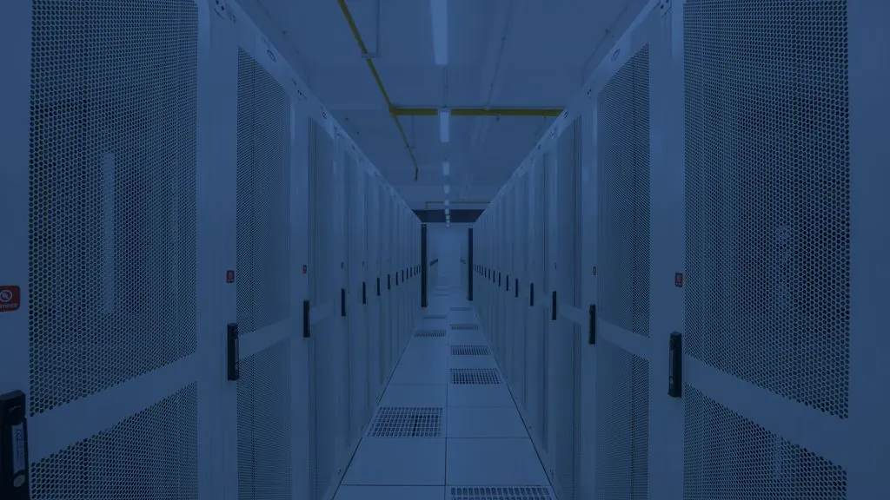

The physical network behind
connected facilities. QA390x97925
Hybridata provides nationwide IT integration services across outside-plant fiber, data center cabling, network infrastructure, wireless site surveys, design and installation, fiber splicing and testing, access control, and surveillance. Start with the site, approved requirements, and project scope.
Follow the path that matches the next project decision.
Routes, pathways, rooms, systems, and project responsibilities shape the work. The service paths stay connected while giving each facility question a clear place to begin.
- 01
OSP Fiber Infrastructure & Route/Permit/ROW Coordination
Outside-plant fiber, with route, permit, and right-of-way coordination handled together.
Explore this service → - 02
Data Center Fiber & Structured Cabling
Structured cabling and data center fiber for your facility.
Explore this service → - 03
Network Engineering, Design-Assist & Consulting
Full network design, plus on-site surveys, design, and audits of your facility.
Explore this service → - 04
- 05
Access Control & Surveillance
Access control and surveillance systems, cabled and connected to your network.
Explore this service → - 06
Wireless Site Surveys, Design & Installation
We survey your space, design your wireless network in Ekahau, and install every access point to spec.
Explore this service → - 07
PTP (Point-to-Point Wireless Links)
Point-to-point wireless links between buildings or sites.
Ask about this service → - 08
- 09
- 10
- 11
Wireless Site Surveys, Design & Installation
Wi-Fi problems are usually design problems. We use Ekahau, the industry standard for wireless engineering, to survey your space, design your network, and install every access point to spec.
Our workflow starts in Ekahau Pro, where we model your facility with wall attenuation, ceiling height, and client density to generate an access point layout that meets your coverage and capacity targets before deployment. On-site, we validate with passive and active surveys, measuring signal strength, SNR, and roaming behavior against the design spec, and correcting any deviation before handoff.
The result: full coverage, reliable roaming, and a network that holds up as you add devices. One team, from blueprint to broadcast.
Start with what the project already knows.
Useful infrastructure conversations name the facility, service need, project stage, available information, and conditions that still need review.
- 01
Project context
Share the site, service need, known requirements, project stage, and the questions still open.
- 02
Choose the useful review
Use a consultation for planning and scope questions, or a site survey when visible facility conditions are central.
- 03
Define the next conversation
Hybridata reviews the available information before timing, activities, records, or outcomes are treated as project facts.
Facts that support a practical first conversation.
- Fully insured
- Project-specific insurance documentation is handled during the commercial process.
- Warranty on materials and labor
- Terms, duration, and exclusions are defined in the project agreement.
- Experienced BICSI field technicians
- No additional credential or certification claim is made.
Bring the site and known requirements.
Share the facility, service need, project stage, available information, and the question that needs a practical next step.